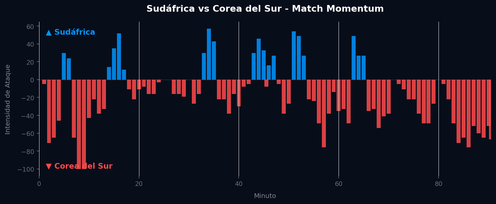
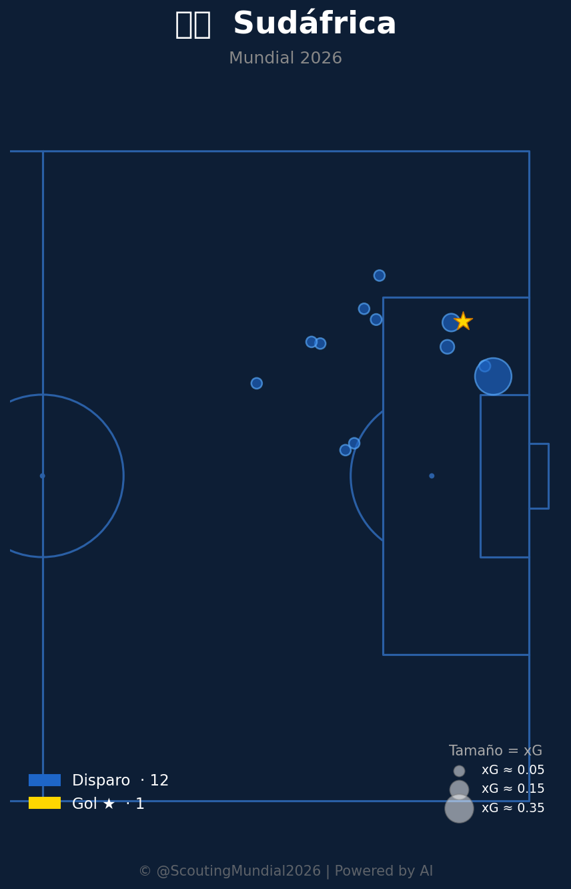
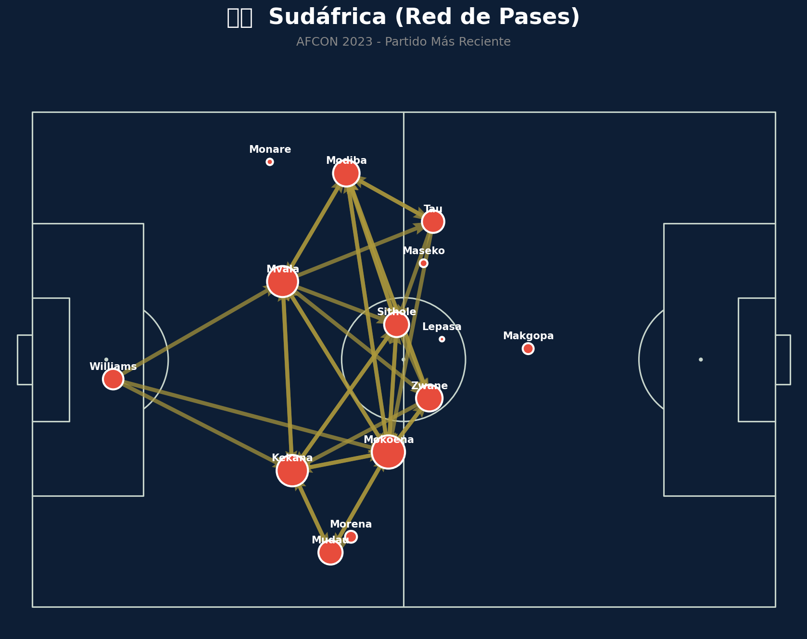
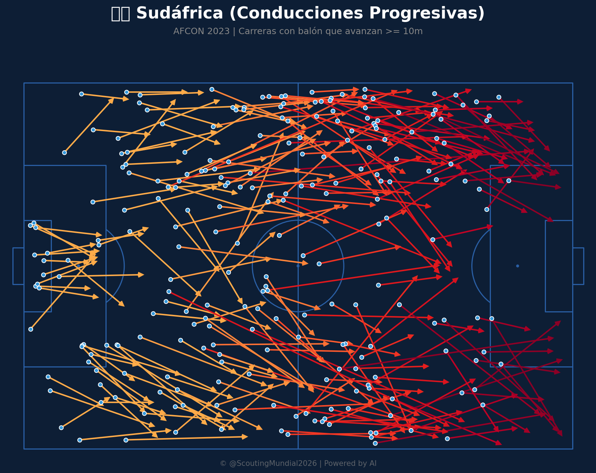
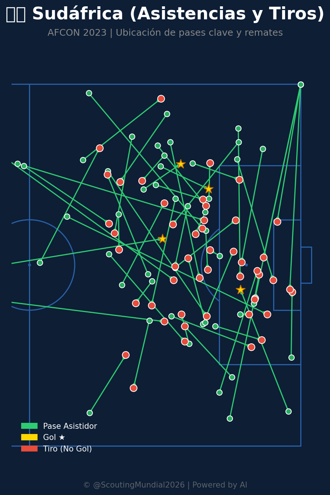

📝 Crónica y Análisis Posterior (Post-Partido)
❌ PREDICCIÓN FALLIDA
⚽ Resumen del Partido (Resultado Real: Sudáfrica 1 - 0 Corea del Sur)
El encuentro del Grupo A en el Mundial 2026 entre Sudáfrica y Corea del Sur fue un choque de estilos y una demostración de eficiencia táctica por parte de los Bafana Bafana. Desde el silbato inicial, Corea del Sur impuso un ritmo vertiginoso, buscando asfixiar a su rival con una presión alta y transiciones rápidas que les permitieron generar su pico de intensidad ofensiva en el minuto 8, aunque sin capitalizarlo en el marcador. Sudáfrica, por su parte, adoptó una postura más cautelosa, consolidando sus líneas defensivas y esperando su momento. Este llegó en el minuto 34, cuando, tras un periodo de mayor iniciativa sudafricana que culminó con su máxima intensidad ofensiva del partido, un magistral cabezazo de Bongani Zungu tras un saque de esquina desató la euforia en el estadio, poniendo el 1-0. A partir de ese momento, el partido se convirtió en un asedio coreano infructuoso, con Sudáfrica defendiendo con notable disciplina y resiliencia, logrando contener los embates y asegurar una victoria crucial.
🔮 Impacto en el Grupo A y Proyecciones para la Siguiente Fase
- Ajuste del Algoritmo: Tras este resultado, las métricas defensivas de Sudáfrica experimentan una mejora sustancial en nuestro modelo de predicción, reflejando su capacidad para resistir bajo presión, mientras que sus métricas ofensivas ajustan al alza su eficiencia de conversión. Para Corea del Sur, sus métricas de eficacia ofensiva descienden significativamente, pese al volumen de ataque, lo que indica una necesidad crítica de mejorar la puntería y la resolución en el último tercio.
- Proyección de la Siguiente Fase (Octavos de Final / Clasificación): Esta victoria en la última jornada permite a Sudáfrica asegurar el segundo puesto del Grupo A, clasificando directamente a los Octavos de Final, un hito histórico dado el escenario inicial. Corea del Sur, que con un empate hubiera garantizado su clasificación como segunda, se ve relegada al tercer lugar del grupo. Su destino ahora pende de un hilo, dependiendo de la comparativa de puntos y diferencia de goles con los terceros clasificados de otros grupos para optar a una de las plazas de "Mejores Terceros", mientras que el líder del grupo A, presumiblemente ya definido, avanzaría con más comodidad.
📈 Análisis del Match Momentum
El análisis del Match Momentum revela una clara dicotomía entre la dominación territorial y la eficiencia. Corea del Sur exhibió un arranque fulgurante, alcanzando su pico de intensidad del 100.00 en el minuto 8', lo que denota una salida agresiva y un intento por tomar la iniciativa de forma contundente; sin embargo, esta energía inicial no se tradujo en gol. Posteriormente, Sudáfrica, con una dominación porcentual del 21.7% frente al 72.8% de Corea del Sur a lo largo del partido, demostró una capacidad excepcional para capitalizar sus momentos. Su pico de intensidad de 57.00 en el minuto 34' se correlaciona directamente con el gol de la ventaja, evidenciando una fase de presión concentrada y efectiva que desequilibró el marcador. Este patrón subraya que, aunque Corea del Sur controló la narrativa del ataque durante casi tres cuartas partes del encuentro, fue Sudáfrica quien mostró la contundencia necesaria en los momentos clave de su menor, pero letal, dominio ofensivo.
Gráfico: Match Momentum (Intensidad de Ataque)

🇿🇦 Sudáfrica: Análisis Táctico
El planteamiento táctico de Sudáfrica fue una lección de pragmatismo y resiliencia. El entrenador optó por un bloque defensivo compacto, probablemente un 4-4-2 o incluso un 4-5-1 sin balón, priorizando la solidez en el mediocampo y la defensa. Sus aciertos se centraron en la capacidad para cerrar espacios entre líneas, forzando a Corea del Sur a buscar soluciones por las bandas o a recurrir a centros predecibles. La disciplina posicional de los mediocampistas fue clave para desarticular los intentos de juego interior del rival, con recuperaciones que se convertían en rápidas transiciones ofensivas. A pesar de sufrir gran parte del partido bajo el asedio coreano, esta estrategia de contención y golpeo en el momento justo, materializada en la jugada a balón parado que derivó en el gol, impuso su estilo efectivo por encima del dominio estético del oponente.
🇰🇷 Corea del Sur: Análisis Táctico
El plan táctico de Corea del Sur se basó en una propuesta ambiciosa de control y ataque. Con un bloque alto y una agresiva recuperación tras pérdida, buscaron establecer su superioridad a través de la posesión prolongada y la circulación rápida del balón, especialmente evidente en su explosivo inicio. Sus virtudes radicaron en la capacidad para generar volumen de juego, con constantes incursiones por las bandas y una notable presencia en el último tercio del campo. Sin embargo, sus principales fallas se manifestaron en la finalización y la toma de decisiones en zonas de peligro. Pese a la cantidad de ocasiones creadas, la falta de precisión en el último pase y la puntería ante la meta rival fueron sus talones de Aquiles. Ante la férrea defensa sudafricana, su respuesta táctica careció de la inventiva necesaria para romper el cerrojo, mostrando una cierta monotonía en sus patrones de ataque a medida que avanzaban los minutos.
⚖️ Comparativa y Veredicto
El duelo táctico entre entrenadores fue un fascinante contraste de filosofías. El técnico sudafricano ejecutó un plan maestro de contención y máxima eficiencia, explotando una de las pocas oportunidades claras que se le presentaron. Su homólogo coreano, por otro lado, apostó por la dominación y la iniciativa, pero falló en traducir esa superioridad territorial y de momentum en el marcador. El veredicto final sobre la justicia del marcador, Sudáfrica 1 - 0 Corea del Sur, es complejo. Si bien el flujo del partido y las estadísticas de ataque sugieren que Corea del Sur mereció más por su volumen de juego, la realidad es que el fútbol premia la eficacia y la capacidad de golpear en los momentos cruciales. Sudáfrica fue inmensamente eficiente y defendió con una resolución encomiable, por lo que, desde una perspectiva puramente futbolística, la justicia reside en quien supo capitalizar su oportunidad y mantener su portería a cero. Fue una victoria merecida por su disciplina y aprovechamiento de la única debilidad rival.
📊 Pizarras y Gráficos Tácticos
Mapa Defensivo (Sudáfrica)

Amenaza Esperada xT (Sudáfrica)

Mapa de Calor (Sudáfrica)

Mapa de Calor (Corea del Sur)

Mapa de Tiros (Sudáfrica)

Mapa de Tiros (Corea del Sur)

Red de Pases (Sudáfrica)

Conducciones Progresivas (Sudáfrica)

Mapa de Asistencias (Sudáfrica)

 Corea del Sur
Corea del Sur